Gender Identification Using Machine Learning and Pattern Recognition
1. Overview
The goal of this project is to build, from scratch, a classifier that identifies the gender associated with a high-level embedding of a face image. The dataset is a synthetic set of low-dimensional embeddings the kind of vector produced by a face encoder neural network and the task is the binary classification problem on top.
Rather than reach for a single black-box classifier, the project walks through the full pattern-recognition pipeline as taught in the Machine Learning and Pattern Recognition course at Politecnico di Torino: feature exploration, normalisation, dimensionality reduction, four families of classifiers, score calibration, and model fusion. Every model including the Gaussian classifiers, the regularised logistic regression, the SVM dual formulation with kernels, and the EM-trained Gaussian Mixture Model is implemented in NumPy/SciPy from first principles, with no scikit-learn or PyTorch in sight.
All hyper-parameters are picked with $K$-fold cross-validation at $K = 6$. The target metric is the normalised minimum detection cost function ($\text{minDCF}$), computed on three application points: the balanced application $(\pi, C_{fn}, C_{fp}) = (0.5, 1, 1)$ and the two imbalanced ones $(0.1, 1, 1)$ and $(0.9, 1, 1)$.
The dataset itself consists of image embeddings low-dimensional representations of face images obtained by mapping them to a common manifold via a neural encoder. Embeddings are synthetic for tractability and have considerably lower dimension than real-world ones. The classifier families analysed are:
- Generative Gaussian models (full / diagonal / tied)
- Logistic regression (linear and quadratic, prior-weighted)
- Support vector machines (linear, polynomial kernel, RBF kernel)
- Gaussian mixture models (full / diagonal / tied components)
Each family is studied across three preprocessing variants (raw, z-scored, Gaussianised) and four PCA settings (no PCA, $m \in \{10, 8, 6\}$), giving a wide search space that the cross-validation prunes.
2. Pre-Processing
Before any classifier is fit, the dataset is explored to decide which preprocessing techniques are worth running. Two visual summaries drive that decision: the per-feature distribution and the feature-correlation heatmap.
Distribution of the raw features. Most are roughly Gaussian; a handful are multi-modal presumably reflecting demographic sub-populations in the underlying face data.
Most features look approximately Gaussian, with a minority displaying bimodal or trimodal shapes that are likely mixtures over latent sub-populations (different ages, accents, recording conditions). This already tells us that a generative model with Gaussian assumptions is a reasonable first stop, but that a mixture model will probably do better when the modes matter.
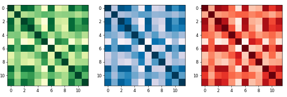
Correlation heatmap of the raw features.
The correlation heatmap shows that several features are strongly correlated, so a model that assumes diagonal covariance (naïve Bayes) is expected to lose information. It also suggests PCA might find a smaller, decorrelated representation without throwing away much signal.
2.1. Normalization
Z-score shifts each feature to zero mean and unit variance:
$$ z = \frac{x - \mu}{\sigma}. $$
Z-scoring is the standard recipe for distance-based and gradient-based models and is what most discriminative classifiers expect at their input. It preserves the shape of each marginal distribution.
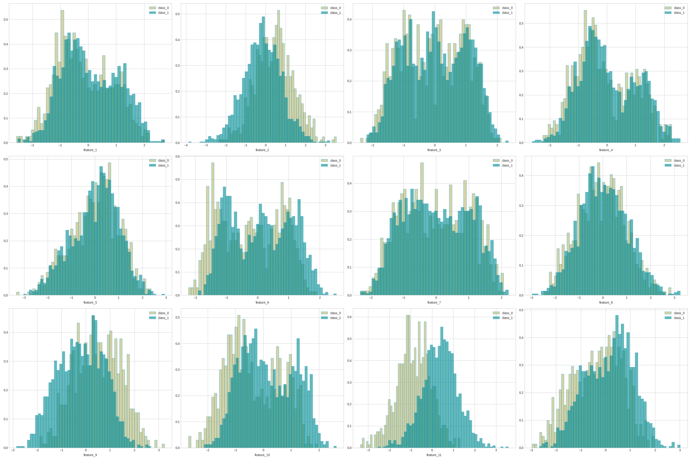
Per-feature distributions after z-scoring. Only the scale changes; the shapes are preserved.
Gaussianisation goes a step further and forces each marginal towards a standard normal via the inverse CDF of an empirical rank statistic. For a sample $x_j$ with empirical CDF rank $r$ on a training set of size $N$,
$$ y = \Phi^{-1}\!\left(\frac{r}{N + 2}\right). $$
Where z-scoring only fixes the first two moments, Gaussianisation removes skew and tails. The cost is that the transform is non-linear and is fit on the training distribution; at test time, ranks are interpolated against the training quantiles.
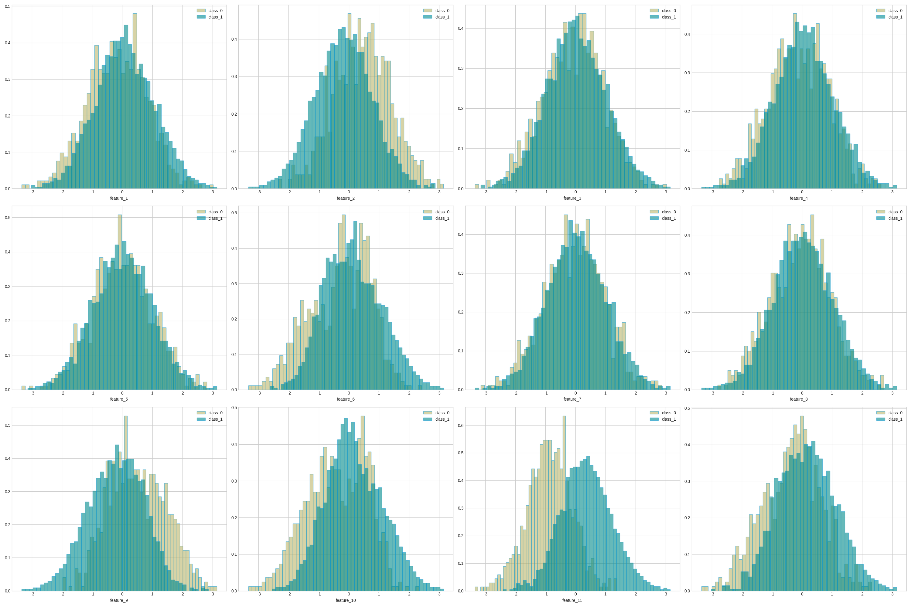
Per-feature distributions after Gaussianisation. All marginals now look standard normal.
2.2. Principal Component Analysis
PCA seeks the direction that maximises projected variance. For a zero-mean random variable $x$ with covariance $\Sigma$, the first principal direction $w$ solves
$$ \max_w\; w^\top \Sigma w \quad \text{s.t.} \quad \lVert w \rVert = 1. $$
The Lagrangian $\mathcal{L} = w^\top \Sigma w + \lambda(w^\top w - 1)$ stationary in $w$ yields the eigen-problem
$$ \Sigma w = \lambda w, \quad \text{with} \quad w^\top \Sigma w = \lambda. $$
The leading eigenvector of the sample covariance captures the most variance; the second leading eigenvector (orthogonal to the first) captures the second most, and so on. The full set is obtained via the SVD of the centred data matrix. Empirically the heatmap above hinted at meaningful redundancy, so PCA is evaluated at $m \in \{10, 8, 6\}$ alongside no-PCA.
3. Multivariate Gaussian Classifiers
The first family is the generative Gaussian classifier. For each class $c$, we model
$$ p(x \mid y = c) = \mathcal{N}(x \mid \mu_c, \Sigma_c), $$
where the density of a $p$-dimensional Gaussian with mean $\mu$ and covariance $\Sigma$ is
$$ \mathcal{N}(x \mid \mu, \Sigma) = \frac{1}{(2\pi)^{p/2} |\Sigma|^{1/2}} \exp\!\left[-\frac{1}{2}(x - \mu)^\top \Sigma^{-1} (x - \mu)\right]. $$
The Maximum Likelihood estimates of mean and covariance from $N$ samples are
$$ \hat\mu_{\text{ML}} = \frac{1}{N} \sum_{i=1}^N x_i, \qquad \hat\Sigma_{\text{ML}} = \frac{1}{N} \sum_{i=1}^N (x_i - \bar x)(x_i - \bar x)^\top. $$
Bayes’ rule then turns class likelihoods into posteriors. For binary classification we compare $p(y=0 \mid x)$ against $p(y=1 \mid x)$, where the normalisation constant cancels and only the unnormalised log-likelihood ratio matters.
Four variants are evaluated:
- Full-Cov per-class full covariance, giving quadratic decision surfaces.
- Diag-Cov per-class diagonal covariance (naïve Bayes), expected to suffer because the heatmap showed strong off-diagonal correlations.
- Tied Full-Cov shared full covariance across classes, giving linear decision surfaces.
- Tied Diag-Cov shared diagonal covariance.
Since the marginals were already roughly Gaussian, the family is expected to do well. The diagonal variants are expected to suffer because of the strong off-diagonal correlations the heatmap revealed.
| Model | Single Fold | 6-Folds | ||||
|---|---|---|---|---|---|---|
| $\pi = 0.5$ | $\pi = 0.1$ | $\pi = 0.9$ | $\pi = 0.5$ | $\pi = 0.1$ | $\pi = 0.9$ | |
| Full-Cov | 0.126 | 0.340 | 0.388 | 0.115 | 0.283 | 0.360 |
| Diag-Cov | 0.515 | 0.784 | 0.822 | 0.467 | 0.795 | 0.789 |
| Tied Full-Cov | 0.125 | 0.302 | 0.426 | 0.113 | 0.289 | 0.339 |
| Tied Diag-Cov | 0.505 | 0.784 | 0.842 | 0.461 | 0.790 | 0.799 |
Both full-covariance variants (full and tied) sit around $\text{minDCF} = 0.11$ at the balanced application. The diagonal variants are catastrophically worse, in line with the prediction from the heatmap. Normalisation and PCA were also evaluated; they do not help on this family raw features with the tied full-covariance model already capture the structure of the data. Tied beats full on the balanced application, which is the first signal that the optimal class boundary on this dataset is linear.
4. Logistic Regression
The discriminative counterpart is logistic regression. Because the project explicitly evaluates three application points with very different priors, we use the prior-weighted objective:
$$ R(w) = \frac{\lambda}{2}\lVert w \rVert^2 + \frac{\pi_T}{n_T} \sum_{i : z_i = 1} \log\!\left(1 + e^{-z_i s_i}\right) + \frac{1 - \pi_T}{n_F} \sum_{i : z_i = -1} \log\!\left(1 + e^{-z_i s_i}\right), $$
where $s_i = w^\top x_i + b$, $z_i \in \{-1, +1\}$, and $\pi_T$ is the target prior we want to optimise for at training time.
The same trainer also produces quadratic separators by applying the model to the feature expansion
$$ \phi(x) = \begin{bmatrix} \text{vec}(x x^\top) \\ x \end{bmatrix}. $$
A linear separator on $\phi(x)$ is a quadratic separator on $x$. This trick lets the same logistic-regression code carry both the linear and quadratic models.
4.1. Linear Logistic Regression
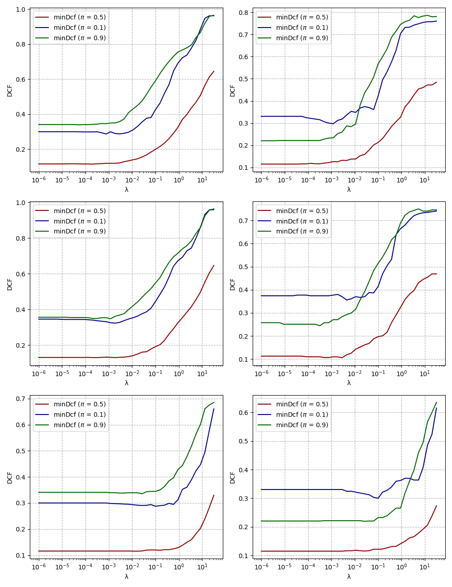
Linear logistic regression: $\text{minDCF}$ vs. regularisation $\lambda$. Top: z-scored features. Middle: Gaussianised. Bottom: raw. Left: 6-fold CV. Right: single fold.
Regularisation buys very little on this dataset; the curves are flat until around $\lambda \approx 0.1$ where they start to degrade. The minimum sits around $\lambda = 10^{-5}$. Z-scoring and Gaussianisation do not help they are not detrimental either, but they bring no measurable gain. Raw features perform best on the balanced application.
| Model | $\pi = 0.5$ | $\pi = 0.1$ | $\pi = 0.9$ |
|---|---|---|---|
| Raw features | |||
| MVG (Full-Cov) | 0.115 | 0.283 | 0.360 |
| MVG (Tied Full-Cov) | 0.113 | 0.289 | 0.339 |
| LogReg ($\pi_T = 0.1$) | 0.122 | 0.273 | 0.392 |
| LogReg ($\pi_T = 0.5$) | 0.115 | 0.290 | 0.349 |
| LogReg ($\pi_T = 0.9$) | 0.116 | 0.324 | 0.324 |
| Gaussianised features | |||
| LogReg ($\pi_T = 0.5$) | 0.127 | 0.362 | 0.362 |
Linear logistic regression essentially recovers the tied-covariance MVG. Tuning $\pi_T$ buys a small win at the matching application (training at $\pi_T = 0.9$ helps the $\pi = 0.9$ test point) but the overall picture matches the prediction: a linear boundary is the right boundary on this data.
4.2. Quadratic Logistic Regression
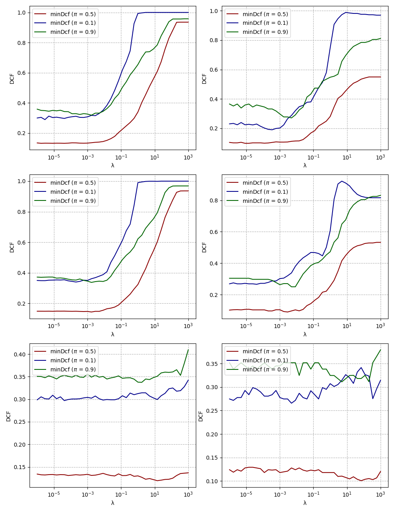
Quadratic logistic regression: $\text{minDCF}$ vs. $\lambda$. Top: z-scored, Middle: Gaussianised, Bottom: raw.
For the quadratic version, regularisation matters more for the normalised features the higher-dimensional $\phi(x)$ expansion makes the loss landscape stiffer. On raw features the model is once again insensitive to $\lambda$. None of the quadratic LR configurations beats the linear version, which is consistent with the linear-boundary story.
| Model | $\pi = 0.5$ | $\pi = 0.1$ | $\pi = 0.9$ |
|---|---|---|---|
| MVG (Full-Cov) | 0.115 | 0.283 | 0.360 |
| MVG (Tied Full-Cov) | 0.113 | 0.289 | 0.339 |
| Quad LR ($\pi_T = 0.5$) | 0.134 | 0.331 | 0.336 |
| Quad LR ($\pi_T = 0.1$) | 0.134 | 0.367 | 0.359 |
| Quad LR ($\pi_T = 0.9$) | 0.138 | 0.360 | 0.371 |
5. Support Vector Machines
The third family is the support vector machine. Three flavours are evaluated: a linear SVM solved through the primal, and two non-linear SVMs polynomial and RBF kernels solved through the dual.
5.1. Linear SVM
The linear primal is
$$ \hat J(\hat w) = \frac{1}{2}\lVert \hat w \rVert^2 + C \sum_{i=1}^n \max\!\left(0, 1 - z_i\, \hat w^\top \hat x_i\right), $$
with $\hat x_i = [x_i^\top, K]^\top$ and $\hat w = [w^\top, b]^\top$. The constant $K$ in the augmented input compensates for the way bias gets regularised inside the augmented norm.
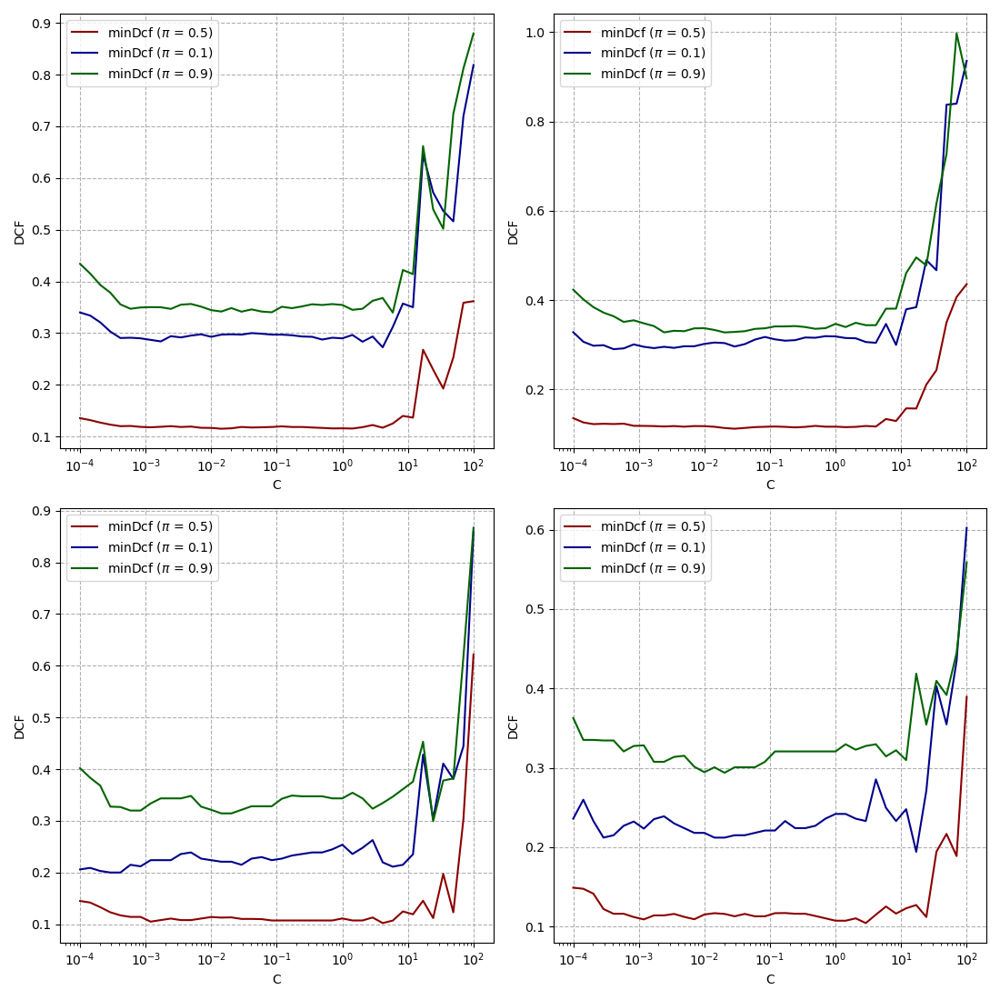
Linear SVM: $\text{minDCF}$ vs. $C$. Top: 6-fold CV. Bottom: single fold. Left: balanced. Right: standard imbalanced.
Across the sweep, $C = 10^{-2}$ is a reasonable choice. Class re-balancing inside the SVM (the imbalanced variant) does not help: the default formulation already tracks the linear MVG and LR results closely. Linear SVM is the best of the three linear baselines but only marginally.
| Model | $\pi = 0.5$ | $\pi = 0.1$ | $\pi = 0.9$ |
|---|---|---|---|
| MVG (Tied Full-Cov) | 0.113 | 0.289 | 0.339 |
| LogReg ($\pi_T = 0.5$) | 0.115 | 0.290 | 0.349 |
| Linear SVM ($C = 10^{-2}$) | 0.112 | 0.286 | 0.334 |
| Linear SVM ($C = 10^{-2}, \pi_T = 0.5$) | 0.116 | 0.296 | 0.328 |
5.2. Polynomial SVM
The non-linear SVMs are solved through the dual
$$ \max_\alpha\; \alpha^\top \mathbf{1} - \tfrac{1}{2} \alpha^\top H \alpha \quad \text{s.t.} \quad 0 \le \alpha_i \le C,\; \sum_i \alpha_i z_i = 0. $$
The kernel function is then plugged into $H_{ij} = z_i z_j \, k(x_i, x_j)$. For the polynomial kernel of degree $d$,
$$ k(x_1, x_2) = (x_1^\top x_2 + 1)^d + \zeta, $$
with $\zeta = K^2$ taking on the role of a regularised bias term.
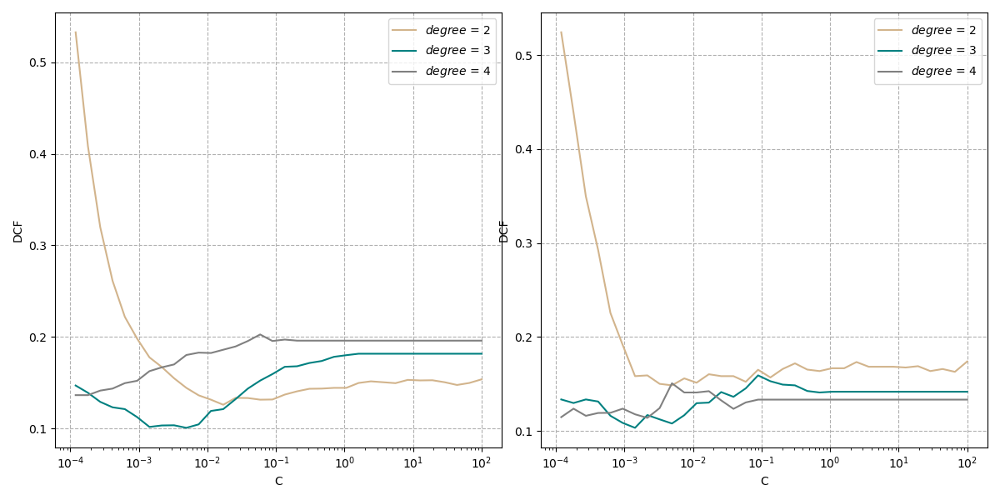
Polynomial SVM on Gaussianised features. $\text{minDCF}$ vs. $C$ across polynomial degrees.
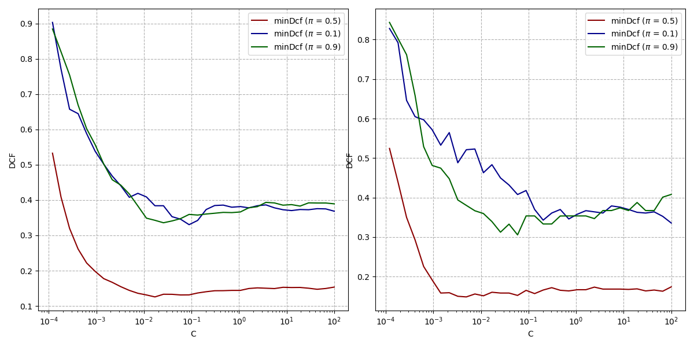
Polynomial SVM on Gaussianised features, sweep over $\pi_T$. The sweet spot lands around $C = 10^{-2.3}$ at degree 2.
| Model | $\pi = 0.5$ | $\pi = 0.1$ | $\pi = 0.9$ |
|---|---|---|---|
| MVG (Full-Cov) | 0.115 | 0.283 | 0.360 |
| Quad LR ($\pi_T = 0.5$) | 0.134 | 0.331 | 0.336 |
| Quad SVM ($C = 10^{-2.3}, d = 3$) | 0.109 | 0.320 | 0.320 |
Quadratic SVM beats quadratic LR at every application point and beats MVG at the balanced one. Different choices of $\pi_T$ give very similar numbers, with the imbalanced default narrowly the best.
5.3. RBF SVM
The RBF kernel is
$$ k(x_1, x_2) = e^{-\gamma \lVert x_1 - x_2 \rVert^2}, $$
and produces a richer decision surface at the cost of one extra hyper-parameter, $\gamma$.
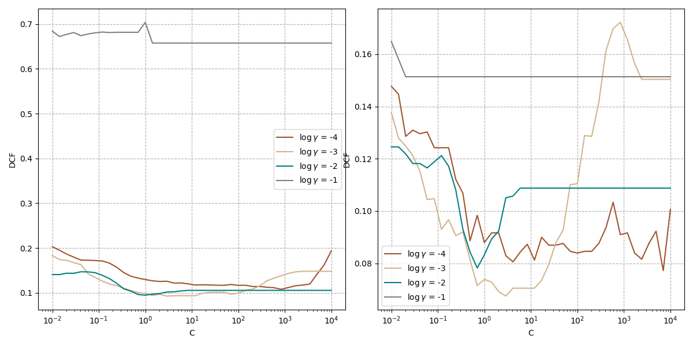
RBF SVM on raw features: $\text{minDCF}$ vs. $C$ across $\gamma$. Best results sit around $\log \gamma = -3$ and $C = 10$.
| Model | $\pi = 0.5$ | $\pi = 0.1$ | $\pi = 0.9$ |
|---|---|---|---|
| MVG (Full-Cov) | 0.115 | 0.283 | 0.360 |
| Quad LR ($\pi_T = 0.5$) | 0.134 | 0.331 | 0.336 |
| Quad SVM ($C = 10^{-2.3}, d = 3$) | 0.109 | 0.320 | 0.320 |
| RBF SVM ($\log C = 1, \log \gamma = -3$) | 0.091 | 0.240 | 0.228 |
The RBF kernel is the first model that substantially improves over the linear baseline at every application point: $\text{minDCF} = 0.091$ at the balanced application is a ~20% relative reduction over the tied MVG, and the imbalanced points improve by even more. Class re-balancing on top of RBF brings small further gains at the matching application but loses elsewhere; in practice the unbalanced default is the safest choice unless the deployment scenario is fixed in advance.
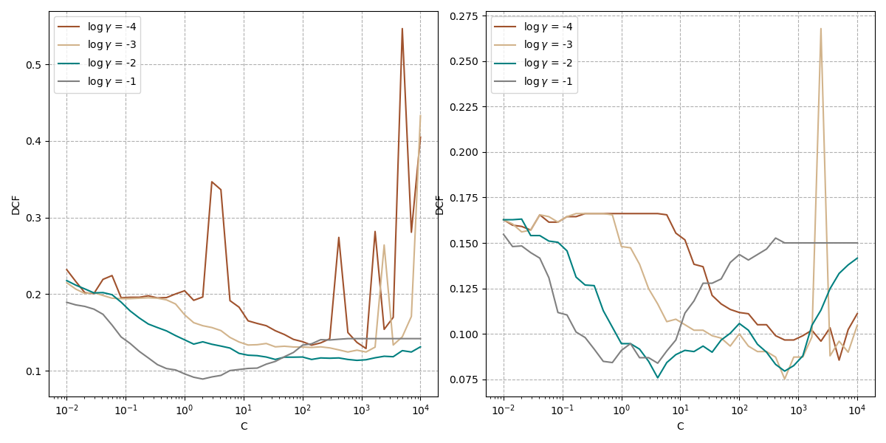
RBF SVM on Gaussianised features. The best $\gamma$ shifts to $10^{-1}$, and absolute numbers are slightly worse than the raw-feature counterpart.
6. Gaussian Mixture Models
The last family models each class as a mixture of Gaussians,
$$ p(x \mid y = c) = \sum_{k=1}^K \pi_{c,k} \, \mathcal{N}(x \mid \mu_{c,k}, \Sigma_{c,k}), $$
fit by the EM algorithm. The E-step computes the responsibilities $\gamma_{c,k}(x_i) = \pi_{c,k} \mathcal{N}(x_i \mid \mu_{c,k}, \Sigma_{c,k}) / \sum_j \pi_{c,j} \mathcal{N}(x_i \mid \mu_{c,j}, \Sigma_{c,j})$ and the M-step updates the means, covariances, and mixture weights from the weighted statistics. The number of components per class is grown using the LBG splitting procedure (each step doubles the number of components and runs a few EM iterations to convergence).
The multi-modal shapes we noticed in the very first distribution plot are exactly the case GMM should handle better than a single Gaussian. We sweep the number of components in $\{1, 2, 4, 8, 16, 32\}$ for both Full-covariance and Tied-covariance variants.
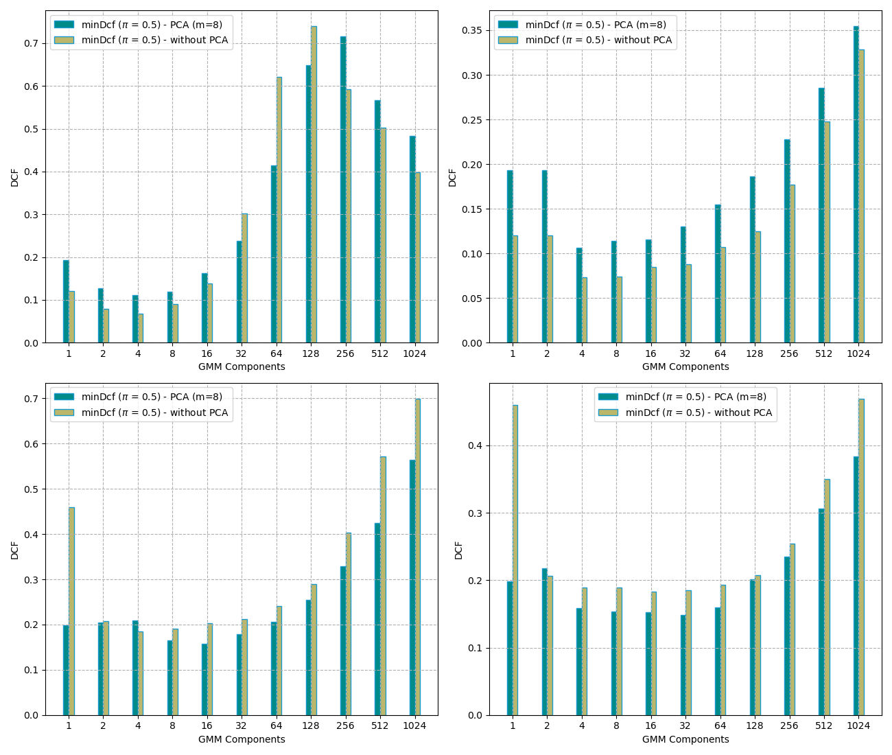
GMM $\text{minDCF}$ vs. number of components on raw features. Left: full covariance per component. Right: tied covariance.
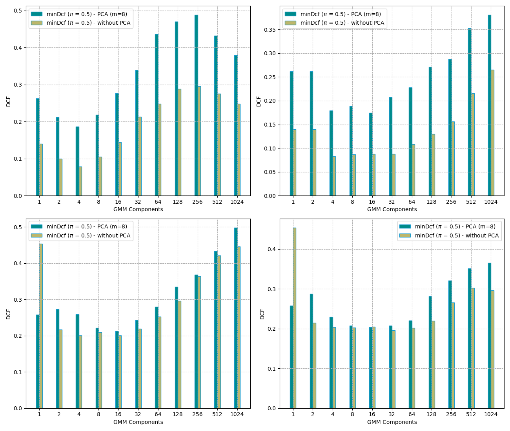
Same sweep on Gaussianised features.
GMM improves on the single-Gaussian MVG once we have enough components to capture the bimodal features, with the best validation score competing closely with the RBF SVM at the balanced application. The full-covariance variant outperforms tied on this dataset, again confirming that the off-diagonal structure of the features carries useful information.
7. Score Calibration and Fusion
All the classifiers above produce scores, but the threshold at which scores translate into class decisions is application-specific. For each application point we need a calibrated score $\tilde s$ such that the theoretical optimal threshold $-\log(\pi / (1 - \pi))$ is also the empirically best threshold. We fit a one-parameter logistic regression on the development scores to learn the affine map
$$ \tilde s = \alpha \, s + \beta - \log\!\left(\frac{\pi}{1 - \pi}\right), $$
with $\pi$ the target prior used during calibration. The same calibrator is then frozen for all applications; the prior-shift term at the end takes care of redirecting it to non-balanced operating points.
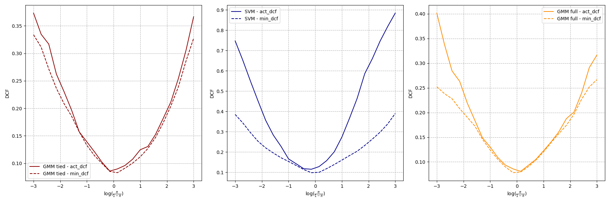
Bayes error plot before calibration. The gap between actDCF and minDCF grows on the tails raw scores are miscalibrated for the imbalanced applications.
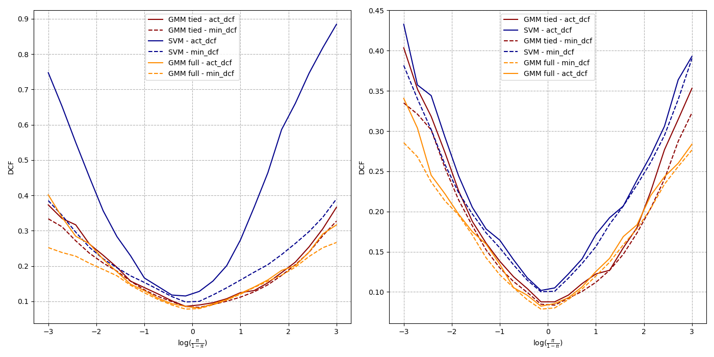
After calibration: actDCF tracks minDCF much more closely across the full prior range.
Score fusion. We finally combine the calibrated scores of the strongest two models (RBF SVM and full-cov GMM) by averaging them in the logit domain, which is equivalent to fitting a multi-input prior-weighted logistic regression on the dev scores. Fusion gives a further small but consistent gain the two models make different mistakes and averaging in log-odds compresses some of that variance.
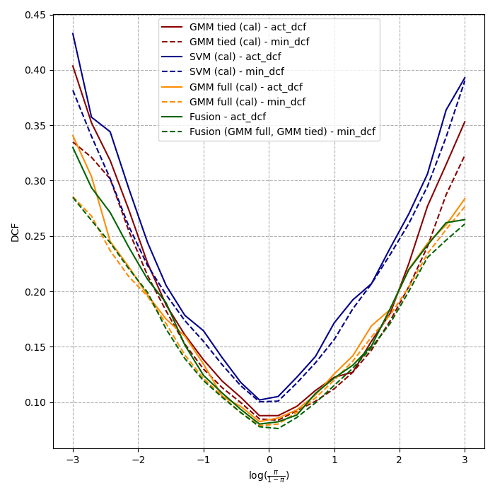
Bayes error: calibrated individual scores vs. the fused two-system score across all priors. The fused score is the lower envelope at every operating point.
8. Evaluation on Test Set
The held-out evaluation set is treated as a true blind test: no model selection or hyper-parameter tuning is performed against it. The candidate pipeline (RBF SVM with raw features, calibrated, fused with the GMM full-cov classifier) is run as is. The Bayes error plot below shows that the qualitative picture from cross-validation holds: the chosen system is well-calibrated across the full prior range, and the fusion remains the lower envelope.
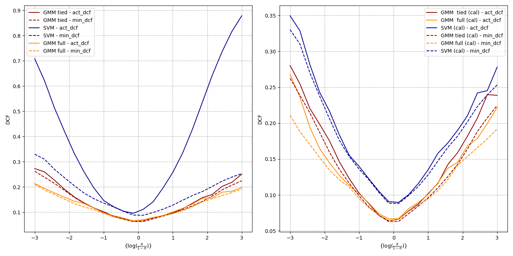
Test set Bayes error after calibration.
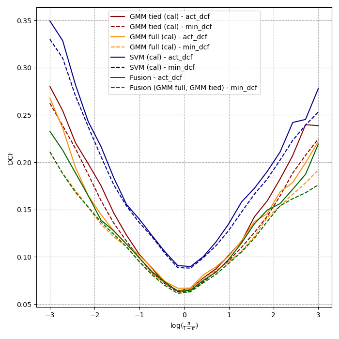
Test set Bayes error after calibration plus fusion.
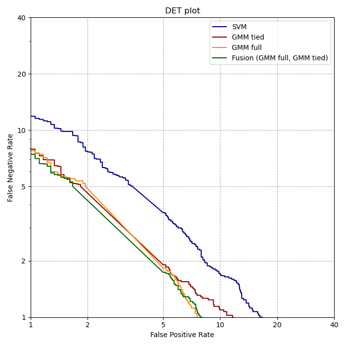
DET curves on the test set: the fused system Pareto-dominates each individual classifier.
9. Conclusion
Across four families of classifiers, the picture is consistent. The dataset's linear-boundary structure is captured by the tied-covariance MVG, the linear LR, and the linear SVM, all of which sit around $\text{minDCF} \approx 0.11$ at the balanced application. Quadratic models improve only marginally. The RBF SVM is the first non-linear model that meaningfully improves the result, dropping the balanced $\text{minDCF}$ to ~0.09 and producing the biggest gains on the imbalanced applications. The GMM with a moderate number of full-covariance components closes most of the same gap by modelling the bimodal feature distributions directly. Calibrating the strongest models and fusing them in the logit domain gives a final small but consistent improvement, and the held-out evaluation confirms the cross-validation ranking.
The bigger takeaway is methodological. Writing every classifier from first principles (Gaussian density, EM, LBG splitting, dual SVM with kernels, prior-weighted logistic regression) makes the modelling assumptions concrete: the heatmap predicted diagonal Gaussians would fail; the marginals predicted GMM would help; the application-point analysis motivated calibration. None of the wins on this dataset came from off-the-shelf tooling they came from understanding which assumption matched the data at each step.